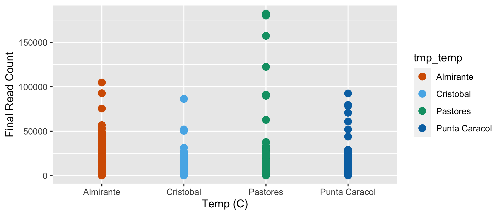

Workflow for preparation of the 16S rRNA data set. These steps are needed before analyzing the data. In this workflow, sample groups are defined, and phyloseq objects are created and curated.
Hit the Hide Code button to collapse the R code (visible by default).
These workflows share many common variable names so you must split the workflow into a script for each data set OR run the command remove(list = ls()) before beginning the next workflow.
In order to run this workflow, you either need to run the corresponding DADA2 Workflow for the 16S rRNA or begin with the output from that workflow, data_prep_ssu_wf.rdata. See the Data Availability page for complete details.
Unless otherwise noted, we primarily use phyloseq (McMurdie and Holmes 2013) in this section of the workflow to prepare the 2018 16S rRNA data set for community analyses. We prepare the data set by curating samples, removing contaminants, and creating phyloseq objects.
Before we begin, let’s create a summary table containing some basic sample metadata and the read count data from the DADA2 workflow. We need to inspect how total reads changed through the workflow. While we are at it, let’s create more intuitive Sample IDs. For more details on how reads changed at each step of the workflow, see the summary table at the end of the DADA2 section. Table headers are as follows:
| Header | Description |
|---|---|
Sample_ID |
The new sample ID based on Site, Week, Region, Season, & Replicate number. |
FastqID |
Base name of the fastq file |
Site |
Sampling site |
Date |
Sampling date |
Region |
Sampling region |
Season |
Sampling season |
Week |
Sampling week |
Replicate |
Replicate number |
Set |
Extraction set |
Extraction |
Unique extrcation ID |
raw |
Initial read count |
nochim |
Final read count after removing chimeras |
perc_remain |
Percent of reads remaining from input to nonchim |
We can also plot the final read count by the Year the sample were taken.

Final read count by temperature treatment. Each point represents a different sample.
Load the data packet produced in the final step of the DADA2 workflow. This packet (ssu_dada2_wf.rdata) contains the ASV-by-sample table and the ASV taxonomy table.
Rename the samples so names have plot and Depth info.
After we load the data packet, we next need to format sample names and define groups.
#tmp_tab <- joined_tab[order(joined_tab$FastqID), ]
#load("files/trepo/dada2/rdata/ssu_dada2_wf.rdata")
seqtab <- readRDS("files/trepo/dada2/rdata/seqtab.nochim_pseudo_pooled.rds")
tax_silva <- readRDS("files/trepo/dada2/rdata/tax_silva_pseudo_pooled.rds")
identical(joined_tab$FastqID, rownames(seqtab))
tmp_new_names <- joined_tab$Sample_ID
rownames(seqtab) <- tmp_new_names
samples.out <- rownames(seqtab)
sample_name <- substr(samples.out, 1, 999)
site <- substr(samples.out, 0, 4)
week <- substr(samples.out, 6, 8)
region <- substr(samples.out, 10, 11)
season <- substr(samples.out, 13, 14)
replicate <- substr(samples.out, 16, 17)Here is a breakdown of the samples based on the new name:
We can also take a look at the number of samples per metadata category.
A. The first step is to rename the amplicon sequence variants (ASVs) so the designations are a bit more user friendly. By default, DADA2 names each ASV by its unique sequence so that data can be directly compared across studies (which is great). But this convention can get cumbersome downstream, so we rename the ASVs using a simpler convention—ASV1, ASV2, ASV3, and so on.
# this create the phyloseq object
ps <- phyloseq(otu_table(seqtab, taxa_are_rows = FALSE),
sample_data(samdf), tax_table(tax_silva))
tax_table(ps) <- cbind(tax_table(ps),
rownames(tax_table(ps)))
# adding unique ASV names
taxa_names(ps) <- paste0("ASV", seq(ntaxa(ps)))
tax_table(ps) <- cbind(tax_table(ps),
rownames(tax_table(ps)))[1] "ASV1" "ASV2" "ASV3" "ASV4" "ASV5" "ASV6"So the complete data set contains 47921 ASVs. We can also use the microbiome R package (Lahti, Sudarshan, and others 2017) to get some additional summary data from the phyloseq object.
| Metric | Results |
|---|---|
| Min. number of reads | 4 |
| Max. number of reads | 182385 |
| Total number of reads | 6465482 |
| Average number of reads | 20723 |
| Median number of reads | 13827.5 |
| Sparsity | 0.939 |
| Any ASVs sum to 1 or less? | TRUE |
| Number of singleton ASVs | 3824 |
| Percent of ASVs that are singletons | 7.98 |
| Number of sample variables are: | 6 (SamName, SITE, WEEK, REGION, SEASON, REP) |
B. Add two final columns containing the ASV sequences and ASV IDs. This will be useful later when trying to export a fasta file. We can also take a look at the phyloseq object.
phyloseq-class experiment-level object
otu_table() OTU Table: [ 47921 taxa and 312 samples ]
sample_data() Sample Data: [ 312 samples by 6 sample variables ]
tax_table() Taxonomy Table: [ 47921 taxa by 8 taxonomic ranks ]C. Export sequence and taxonomy tables for the unadulterated phyloseq object for later use. We will use the prefix full to indicate that these are the raw outputs.
Let’s see if we have any potential contaminants. We can use some inline R code to see the taxonomy table for any taxa of interest.
Let’s remove these taxa—Eukaryota because we used bacterial/archaeal primers, Mitochondria because those are likely from eukaryotes, and Chloroplast because those are likely from plants. We must do each of these in turn using phyloseq and it gets a little messy.
Why messy? The subset_taxa command removes anything that is NA for the specified taxonomic level or above. For example, lets say you run the subset_taxa command using Family != "Mitochondria". Seems like you should get a phyloseq object with everything except Mitochondria. But actually the command not only gets rid of Mitochondria but everything else that has NA for Family and above. In my experience this is not well documented and I had to dig through the files to figure out what was happening.
Anyway, to remove the taxa we do the following:
ps object of just the taxa of interest,ps object.Remember the original data set contained 47921 ASVs. Here we generate a file with mitochondria ASVs only.
tmp_MT1 <- subset_taxa(ps, Family == "Mitochondria")
tmp_MT1 <- as(tax_table(tmp_MT1), "matrix")
tmp_MT1 <- tmp_MT1[, 8]
tmp_MT1df <- as.factor(tmp_MT1)
goodTaxa <- setdiff(taxa_names(ps), tmp_MT1df)
ps_no_mito <- prune_taxa(goodTaxa, ps)
ps_no_mito
saveRDS(ps_no_mito, "files/trepo/data-prep/rdata/ssu_ps_no_mito.rds") phyloseq-class experiment-level object
otu_table() OTU Table: [ 47907 taxa and 312 samples ]
sample_data() Sample Data: [ 312 samples by 6 sample variables ]
tax_table() Taxonomy Table: [ 47907 taxa by 8 taxonomic ranks ]Looks like this removed 14 Mitochondria ASVs. We will duplicate the code block to remove other groups.
And again with Chloroplast ASVs only.
tmp_CH1 <- subset_taxa(ps_no_mito, Order == "Chloroplast")
tmp_CH1 <- as(tax_table(tmp_CH1), "matrix")
tmp_CH1 <- tmp_CH1[, 8]
tmp_CH1df <- as.factor(tmp_CH1)
goodTaxa <- setdiff(taxa_names(ps_no_mito), tmp_CH1df)
ps_no_chloro <- prune_taxa(goodTaxa, ps_no_mito)
ps_no_chloro
saveRDS(ps_no_chloro, "files/trepo/data-prep/rdata/ssu_ps_no_chloro.rds") phyloseq-class experiment-level object
otu_table() OTU Table: [ 47831 taxa and 312 samples ]
sample_data() Sample Data: [ 312 samples by 6 sample variables ]
tax_table() Taxonomy Table: [ 47831 taxa by 8 taxonomic ranks ]The code removed an additional 76 Chloroplast ASVs.
And again with Eukaryota ASVs only.
tmp_EU1 <- subset_taxa(ps_no_chloro, Kingdom == "Eukaryota")
tmp_EU1 <- as(tax_table(tmp_EU1), "matrix")
tmp_EU1 <- tmp_EU1[, 8]
tmp_EU1df <- as.factor(tmp_EU1)
goodTaxa <- setdiff(taxa_names(ps_no_chloro), tmp_EU1df)
ps_no_euk <- prune_taxa(goodTaxa, ps_no_chloro)
ps_no_euk
saveRDS(ps_no_euk, "files/trepo/data-prep/rdata/ssu_ps_no_euk.rds") phyloseq-class experiment-level object
otu_table() OTU Table: [ 47825 taxa and 312 samples ]
sample_data() Sample Data: [ 312 samples by 6 sample variables ]
tax_table() Taxonomy Table: [ 47825 taxa by 8 taxonomic ranks ]The code removed an additional 6 Eukaryota ASVs from the ps object.
Here we can just use the straight up subset_taxa command since we do not need to worry about any ranks above Kingdom also being removed.
Next, we can remove samples with really low read counts, say less than 500 reads.
sample_sums.ps_filt.
PAST_W27_IB_NS_R3 4
ALMR_W29_IB_NS_R3 7
PUCL_W35_OB_NS_R3 27
ALMR_W37_IB_NS_R1 839
PAST_W37_IB_NS_R2 282
CRIS_W41_OB_HS_R3 10
PUCL_W43_OB_HS_R2 538
CRIS_W45_OB_HS_R1 33We lost 8 sample(s). After removing samples we need to check whether any ASVs ended up with no reads.
And we lost 28 ASV(s). So now we must remove these from the ps object.
phyloseq-class experiment-level object
otu_table() OTU Table: [ 47725 taxa and 304 samples ]
sample_data() Sample Data: [ 304 samples by 6 sample variables ]
tax_table() Taxonomy Table: [ 47725 taxa by 8 taxonomic ranks ]The code eliminated an additional 72 Kingdom level NA ASVs from the phyloseq object.
Phyloseq has an odd way of dealing with taxonomic ranks that have no value—in other words, NA in the tax table. The first thing we are going to do before moving forward is to change all of the NAs to have a value of the next highest classified rank. For example, ASV26 is not classified at the Genus level but is at Family level (Xanthobacteraceae). So we change the Genus name to Family_Xanthobacteraceae. The code for comes from these two posts on the phyloseq GitHub, both by MSMortensen: issue #850 and issue #990.
One thing this code does is reassign the functions
classandorderto taxonomic ranks. This can cause issues if you need these functions.
So you need to run something like this rm(class, order, phylum, kingdom) at the end of the code to remove these as variables. For now, I have not come up with a better solution.
tax.clean <- data.frame(tax_table(tmp_ps_work))
for (i in 1:6){ tax.clean[,i] <- as.character(tax.clean[,i])}
tax.clean[is.na(tax.clean)] <- ""
for (i in 1:nrow(tax.clean)){
if (tax.clean[i,2] == ""){
kingdom <- base::paste("k_", tax.clean[i,1], sep = "")
tax.clean[i, 2:6] <- kingdom
} else if (tax.clean[i,3] == ""){
phylum <- base::paste("p_", tax.clean[i,2], sep = "")
tax.clean[i, 3:6] <- phylum
} else if (tax.clean[i,4] == ""){
class <- base::paste("c_", tax.clean[i,3], sep = "")
tax.clean[i, 4:6] <- class
} else if (tax.clean[i,5] == ""){
order <- base::paste("o_", tax.clean[i,4], sep = "")
tax.clean[i, 5:6] <- order
} else if (tax.clean[i,6] == ""){
tax.clean$Genus[i] <- base::paste("f",tax.clean$Family[i], sep = "_")
}
}
tax_table(tmp_ps_work) <- as.matrix(tax.clean)
rank_names(tmp_ps_work)
rm(class, order, phylum, kingdom, tax.clean) Still the same ranks. That’s good. What about the new groups? Let’s take a peak at some families.
[1] "Pirellulaceae" "Thermoanaerobaculaceae"
[3] "c_Thermoplasmata" "koll11"
[5] "SG8-4" "A4b"
[7] "k_Bacteria" "o_H3.93"
[9] "c_Thermodesulfovibrionia" "p_PAUC34f"
[11] "o_WCHB1-41" "Clostridiaceae"
[13] "c_Bathyarchaeia" "Desulfobacteraceae"
[15] "Omnitrophaceae" "p_RCP2-54" Nice. Bye-bye NA
Note. The original code mentioned above is written for data sets that have species-level designations.
Since this data set does not contain species, I modified the code to stop at the genus level. If your data set has species, my modifications will not work for you.
Finally, we rename the ps object. This is now our working data set.
At this point we can create a ps object containing samples merged by replicates. Since we do this after removing low-read count samples, these two objects should contain the same number of reads.
tmp_ps_work <- ps_work
sample_data(tmp_ps_work)$MERGE_ID <- base::paste(sample_data(tmp_ps_work)$SITE,
sample_data(tmp_ps_work)$WEEK,
sep = "_")
sample_data(tmp_ps_work)$MERGE_ID <- base::paste(sample_data(tmp_ps_work)$MERGE_ID,
sample_data(tmp_ps_work)$REGION,
sep = "_")
sample_data(tmp_ps_work)$MERGE_ID <- base::paste(sample_data(tmp_ps_work)$MERGE_ID,
sample_data(tmp_ps_work)$SEASON,
sep = "_")
sample_data(tmp_ps_work)$REP <- NULL
sample_data(tmp_ps_work)$SamName <- NULL
tmp_sd <- data.frame(sample_data(tmp_ps_work))
tmp_unique <- unique(tmp_sd)
tmp_unique <- tmp_unique %>% dplyr::rename("SamName" = "MERGE_ID")
tmp_ps_merge <- merge_samples(tmp_ps_work, "MERGE_ID")
sample_data(tmp_ps_merge)$SamName <- row.names(sample_data(tmp_ps_merge))
sample_data(tmp_ps_merge)[,1:5] <- NULL
tmp_sd_o <- data.frame(sample_data(tmp_ps_merge))
tmp_ps_merge_sd <- dplyr::left_join(tmp_sd_o, tmp_unique)
tmp_ps_merge_sd$ROWID <- tmp_ps_merge_sd$SamName
tmp_ps_merge_sd <- tmp_ps_merge_sd %>% tibble::column_to_rownames("ROWID")
sample_data(tmp_ps_merge) <- tmp_ps_merge_sd
ps_work_merge <- tmp_ps_merge
rm(tmp_ps_work)
rm(tmp_ps_merge) phyloseq-class experiment-level object
otu_table() OTU Table: [ 47725 taxa and 104 samples ]
sample_data() Sample Data: [ 104 samples by 6 sample variables ]
tax_table() Taxonomy Table: [ 47725 taxa by 8 taxonomic ranks ]
phy_tree() Phylogenetic Tree: [ 47725 tips and 47724 internal nodes ][1] "Read count, all samples:"[1] 6457054[1] "Read count, merged samples:"[1] 6457054One final task is to add a phylogenetic tree to the phyloseq object.
ps_work_tree <- rtree(ntaxa(ps_work), rooted = TRUE,
tip.label = taxa_names(ps_work))
ps_work <- merge_phyloseq(ps_work,
sample_data,
ps_work_tree)
ps_work_merge_tree <- rtree(ntaxa(ps_work_merge), rooted = TRUE,
tip.label = taxa_names(ps_work_merge))
ps_work_merge <- merge_phyloseq(ps_work_merge,
sample_data,
ps_work_merge_tree)
ps_work_o_tree <- rtree(ntaxa(ps_work_o), rooted = TRUE,
tip.label = taxa_names(ps_work_o))
ps_work_o <- merge_phyloseq(ps_work_o,
sample_data,
ps_work_o_tree)
saveRDS(ps_work, "files/trepo/data-prep/rdata/ssu_ps_work.rds")
saveRDS(ps_work_merge, "files/trepo/data-prep/rdata/ssu_ps_work_merge.rds")
saveRDS(ps_work_o, "files/trepo/data-prep/rdata/ssu_ps_work_o.rds") Later in the workflow, we will generate an ampvis2 object from the working phyloseq object, but first we need to fix the OTU table from the phyloseq object. For some reason, values in otu table are int but need to be dbl or else ampvis2 will not work properly.
ps_list <- c("ps_work", "ps_work_merge")
for (i in ps_list) {
tmp_get <- get(i)
tmp_otu <- data.frame(t(otu_table(tmp_get)))
tmp_otu[] <- lapply(tmp_otu, as.numeric)
tmp_otu <- as.matrix(tmp_otu)
tmp_tax <- as.matrix(data.frame(tax_table(tmp_get)))
tmp_samples <- data.frame(sample_data(tmp_get))
tmp_amp <- merge_phyloseq(otu_table(tmp_otu, taxa_are_rows = TRUE),
tax_table(tmp_tax),
sample_data(tmp_samples))
tmp_name <- purrr::map_chr(i, ~ paste0(., "_amp"))
assign(tmp_name, tmp_amp)
rm(list = ls(pattern = "tmp_"))
}
saveRDS(ps_work_amp, "files/trepo/data-prep/rdata/ssu_ps_work_amp.rds")
saveRDS(ps_work_merge_amp, "files/trepo/data-prep/rdata/ssu_ps_work_merge_amp.rds")Now that we have removed the NC and sample with zero reads, we can summarize the data set so far. Let’s start with the in our working phyloseq object using the summarize_phyloseq from the microbiome R package (Lahti, Sudarshan, and others 2017) as we did above.
| Metric | Results |
|---|---|
| Min. number of reads | 2699 |
| Max. number of reads | 182257 |
| Total number of reads | 6457054 |
| Average number of reads | 21240 |
| Median number of reads | 13974 |
| Sparsity | 0.91 |
| Any ASVs sum to 1 or less? | TRUE |
| Number of singleton ASVs | 3816 |
| Percent of ASVs that are singletons | 7.996 |
| Number of sample variables are: | 6 (SamName, SITE, WEEK, REGION, SEASON, REP) |
We can also generate a summary table of total reads & ASVs for each sample. You can sort the table, download a copy, or filter by search term. Here is the code to generate the data for the table. First, we create data frames that hold total reads and ASVs for each sample.
tmp_total_reads <- sample_sums(ps_work)
tmp_total_reads <- as.data.frame(tmp_total_reads, make.names = TRUE)
tmp_total_reads <- tmp_total_reads %>% rownames_to_column("Sample_ID")
tmp_total_asvs <- estimate_richness(ps_work,
measures = "Observed")
tmp_total_asvs <- tmp_total_asvs %>% rownames_to_column("Sample_ID")
tmp_total_asvs$Sample_ID <- gsub('\\.', '-', tmp_total_asvs$Sample_ID)And then we merge these two data frames with the sample data frame.
sam_details <- data.frame(sample_data(ps_work))
rownames(sam_details) <- NULL
colnames(sam_details) <- c("Sample_ID", "SITE", "WEEK",
"REGION", "SEASON", "REP")
joined_percent <- joined_tab
joined_percent[, c(2:11)] <- NULL
merge_tab <- dplyr::left_join(sam_details, tmp_total_reads) %>%
left_join(., joined_percent)
percent_change2 <- 100*(1-(merge_tab$tmp_total_reads/merge_tab$nochim)) %>%
round(digits = 5)
merge_tab$Change <- as.numeric(sprintf("%.3f", percent_change2))
merge_tab2 <- dplyr::left_join(merge_tab, tmp_total_asvs, by = "Sample_ID")
merge_tab2$coverage = cut(merge_tab2$tmp_total_reads,
c(0, 5000, 25000, 100000, 200000),
labels = c(
"low (< 5k)", "medium (5-25k)",
"high (25-100k)", "extra_high (> 100k)"))
merge_tab2[, c(8:10)] <- NULL
colnames(merge_tab2) <- c("Sample_ID", "SITE", "WEEK",
"REGION", "SEASON", "REP",
"final_reads", "reads_lost", "total_asvs", "coverage")
rm(list = ls(pattern = "tmp_"))| Metric | Results |
|---|---|
| Min. number of reads | 12882 |
| Max. number of reads | 399900 |
| Total number of reads | 6457054 |
| Average number of reads | 62087 |
| Median number of reads | 44092 |
| Sparsity | 0.294 |
| Any ASVs sum to 1 or less? | TRUE |
| Number of singleton ASVs | 3791 |
| Percent of ASVs that are singletons | 7.943 |
| Number of sample variables are: | 6 (SamName, SITE, WEEK, REGION, SEASON, REP) |
We have phyloseq objects but we also want to make taxmap objects so we can use the metacoder (Foster, Sharpton, and Grünwald 2017) and taxa packages. We will jump back and forth between between different tools and packages because each has functionality not available in the others. That said, each package also requires a specially formatted object to work with.
Confused? I was too until I realized that a phyloseq object contains only three type of tables: an otu_table, a sample_data, and a tax_table1. So any time you want to manipulate your data—say look at relative ASV abundance—you need a new phyloseq object. A taxmap object on the other hand can contain many different types of data tables, and as such, is generally more flexible.
First, we can take a look at the phyloseq object generated during the previous workflow.
phyloseq-class experiment-level object
otu_table() OTU Table: [ 47725 taxa and 304 samples ]
sample_data() Sample Data: [ 304 samples by 6 sample variables ]
tax_table() Taxonomy Table: [ 47725 taxa by 8 taxonomic ranks ]
phy_tree() Phylogenetic Tree: [ 47725 tips and 47724 internal nodes ]In order to use the taxa package, we need to have our data in a specific format. Metacoder has a command called parse_phyloseq, which should do the work for us, but I was unable to get this to work for our phyloseq object. Instead, we generate the necessary tables directly from the phyloseq object and then create a basic taxmap object. I apologize for the circuitous route, but at least it is relatively simple. We need the a) taxonomy table, b) ASV table, and c) sample metadata table. We will first create the tables and then save a local copy.
tmp_tax_tab <- as.data.frame(tax_table(ps_work))
tmp_tax_tab <- tibble::rownames_to_column(tmp_tax_tab, "asv_id")
tmp_tax_tab$ASV_SEQ <- NULL
colnames(tmp_tax_tab)[colnames(tmp_tax_tab) == "ASV_ID"] <- "ASV"
write.table(tmp_tax_tab, "files/trepo/data-prep/tables/ssu_tax_tab_mc.txt",
quote = FALSE, sep = "\t", row.names = FALSE) tmp_asv_tab <- as.data.frame(otu_table(ps_work))
# this orders in decending fashion
tmp_asv_tab <- tmp_asv_tab[ statnet.common::order(row.names(tmp_asv_tab)), ]
tmp_asv_tab <- as.data.frame(t(tmp_asv_tab))
tmp_asv_tab <- tibble::rownames_to_column(tmp_asv_tab, "asv_id")
write.table(tmp_asv_tab, "files/trepo/data-prep/tables/ssu_asv_tab_mc.txt",
quote = FALSE, sep = "\t", row.names = FALSE) tmp_sam_tab <- merge_tab2
tmp_sam_tab[,8] <- NULL
tmp_sam_tab <- tmp_sam_tab %>% dplyr::rename("total_reads" = "final_reads")
# this orders in decending fashion
tmp_sam_tab <- tmp_sam_tab[statnet.common::order(tmp_sam_tab$Sample_ID), ]
write.table(tmp_sam_tab, "files/trepo/data-prep/tables/ssu_sam_tab_mc.txt",
quote = FALSE, sep = "\t", row.names = FALSE) Now that we have a local copy of each table (tax_tab, asv_tab, & sam_tab), we can read those tables back in using the readr package. Why are we doing it this way instead of just setting each table to a variable? Great question. We do it this way because readr returns tibbles instead of data frames. Metacoder/taxa works best when the data is in tibble format. Instead of writing and reading the tables, you could use the command tibble(), which would convert the data frame to a tibble.
tmp_asv_data_i <- read_tsv("files/trepo/data-prep/tables/ssu_asv_tab_mc.txt")
str(tmp_asv_data_i)
tmp_tax_data <- read_tsv("files/trepo/data-prep/tables/ssu_tax_tab_mc.txt")
str(tmp_tax_data)
samp_data <- read_tsv("files/trepo/data-prep/tables/ssu_sam_tab_mc.txt",
col_types = "ccccccddc")
str(samp_data)
tmp_asv_data <- left_join(tmp_asv_data_i, tmp_tax_data,
by = c("asv_id" = "asv_id"))
str(tmp_asv_data)
write_csv(tmp_asv_data, "files/trepo/data-prep/tables/ssu_asv_tax_tab.csv")
write_csv(samp_data, "files/trepo/data-prep/tables/ssu_sam_tab_mc.csv")With all the data in hand that we need, time to create a taxmap object.
The last task is to create an ampvis2 object so we can use the ampvis2 (Andersen et al. 2018) R package for some of the analyses and visualizations. An ampvis2 object is similar in structure to a phyloseq object except that you need to provide a combined ASV/taxonomy table. To create the object, we use the modified phyloseq objects, ps_work_amp and ps_work_merge_amp
Start by generating and modifying dataframes from the tables in the phyloseq object. Ampvis2 requires the column header “OTU” instead of “ASV” or any other name.
Here, rows must be OTUs (ASVs) and the last 7 columns must be taxonomic lineage.
You can now access the different parts of the ampvis2 object using amp_data$abund for the ASV table, amp_data$tax for the taxonomy table, and amp_data$metadata for the sample data.
We have a few different options to play with. At this point it is difficult to say which we will use or whether additional objects need to be created. Here is a summary of the objects we have.
The phyloseq object before changing NA ranks.
phyloseq-class experiment-level object
otu_table() OTU Table: [ 47725 taxa and 304 samples ]
sample_data() Sample Data: [ 304 samples by 6 sample variables ]
tax_table() Taxonomy Table: [ 47725 taxa by 8 taxonomic ranks ]
phy_tree() Phylogenetic Tree: [ 47725 tips and 47724 internal nodes ] [1] NA "Pirellulaceae" "Omnitrophaceae"
[4] "Gemmatimonadaceae" "Ruminococcaceae" "Phycisphaeraceae"
[7] "Calditrichaceae" "Entotheonellaceae" "SM23-30"
[10] "GW2011_GWC1_47_15" "Sporomusaceae" "SCGC_AAA011-D5"
[13] "Latescibacteraceae" "Desulfosarcinaceae" "Bacteroidetes_BD2-2"
[16] "Christensenellaceae"The phyloseq object after changing NA ranks.
phyloseq-class experiment-level object
otu_table() OTU Table: [ 47725 taxa and 304 samples ]
sample_data() Sample Data: [ 304 samples by 6 sample variables ]
tax_table() Taxonomy Table: [ 47725 taxa by 8 taxonomic ranks ]
phy_tree() Phylogenetic Tree: [ 47725 tips and 47724 internal nodes ] [1] "Pirellulaceae" "Thermoanaerobaculaceae"
[3] "c_Thermoplasmata" "koll11"
[5] "SG8-4" "A4b"
[7] "k_Bacteria" "o_H3.93"
[9] "c_Thermodesulfovibrionia" "p_PAUC34f"
[11] "o_WCHB1-41" "Clostridiaceae"
[13] "c_Bathyarchaeia" "Desulfobacteraceae"
[15] "Omnitrophaceae" "p_RCP2-54" The merged phyloseq object after changing NA ranks.
phyloseq-class experiment-level object
otu_table() OTU Table: [ 47725 taxa and 104 samples ]
sample_data() Sample Data: [ 104 samples by 6 sample variables ]
tax_table() Taxonomy Table: [ 47725 taxa by 8 taxonomic ranks ]
phy_tree() Phylogenetic Tree: [ 47725 tips and 47724 internal nodes ] [1] "SG8-4" "p_WS1"
[3] "c_OM190" "o_JdFR-43"
[5] "o_MSB-5B2" "Altiarchaeaceae"
[7] "o_Methanofastidiosales" "c_Gammaproteobacteria"
[9] "k_Bacteria" "p_LCP-89"
[11] "Thermoanaerobaculaceae" "p_Zixibacteria"
[13] "o_Gaiellales" "Omnitrophaceae"
[15] "Vibrionaceae" "Lachnospiraceae" The taxmap objects.
<Taxmap>
50302 taxa: aaab. Bacteria ... cwks. ASV6647
50302 edges: NA->aaab, NA->aaac ... acih->cwks
1 data sets:
asv_counts:
# A tibble: 47,725 x 313
taxon_id asv_id ALMR_W01_IB_HS_… ALMR_W01_IB_HS_…
<chr> <chr> <dbl> <dbl>
1 adve ASV13… 7 1
2 advf ASV35… 0 0
3 advg ASV94… 0 2
# … with 47,722 more rows, and 309 more variables:
# ALMR_W01_IB_HS_R3 <dbl>, ALMR_W03_IB_HS_R1 <dbl>,
# ALMR_W03_IB_HS_R2 <dbl>, ALMR_W03_IB_HS_R3 <dbl>,
# ALMR_W05_IB_HS_R1 <dbl>, ALMR_W05_IB_HS_R2 <dbl>,
# ALMR_W05_IB_HS_R3 <dbl>, ALMR_W07_IB_HS_R1 <dbl>,
# ALMR_W07_IB_HS_R2 <dbl>, ALMR_W07_IB_HS_R3 <dbl>,
# …
0 functions:<Taxmap>
50302 taxa: aaab. Bacteria ... cwks. ASV17688
50302 edges: NA->aaab, NA->aaac ... achv->cwks
1 data sets:
asv_counts:
# A tibble: 47,725 x 113
taxon_id asv_id ALMR_W01_IB_HS ALMR_W03_IB_HS
<chr> <chr> <dbl> <dbl>
1 adve ASV37… 0 1
2 advf ASV45… 0 0
3 advg ASV79… 0 0
# … with 47,722 more rows, and 109 more variables:
# ALMR_W05_IB_HS <dbl>, ALMR_W07_IB_HS <dbl>,
# ALMR_W09_IB_HS <dbl>, ALMR_W11_IB_HS <dbl>,
# ALMR_W13_IB_NS <dbl>, ALMR_W15_IB_NS <dbl>,
# ALMR_W17_IB_NS <dbl>, ALMR_W19_IB_NS <dbl>,
# ALMR_W21_IB_NS <dbl>, ALMR_W23_IB_NS <dbl>, …
0 functions:The ampvis2 object.
ampvis2 object with 4 elements.
Summary of OTU table:
Samples OTUs Total#Reads Min#Reads Max#Reads
304 47725 6457054 2699 182257
Median#Reads Avg#Reads
13974 21240.31
Assigned taxonomy:
Kingdom Phylum Class Order Family
47725(100%) 47555(99.64%) 47716(99.98%) 47643(99.83%) 47550(99.63%)
Genus Species
47711(99.97%) 47725(100%)
Metadata variables: 9
Sample_ID, SITE, WEEK, REGION, SEASON, REP, total_reads, total_asvs, coverageampvis2 object with 4 elements.
Summary of OTU table:
Samples OTUs Total#Reads Min#Reads Max#Reads
104 47725 6457054 12882 399900
Median#Reads Avg#Reads
44092 62087.06
Assigned taxonomy:
Kingdom Phylum Class Order Family
47725(100%) 47555(99.64%) 47716(99.98%) 47643(99.83%) 47550(99.63%)
Genus Species
47711(99.97%) 47725(100%)
Metadata variables: 8
Sample_ID, SITE, WEEK, REGION, SEASON, total_reads, total_asvs, coverageThe last thing tasks to complete are to a) save copies of the taxonomy and sequence tables and b) save an image of the workflow for the next section.
write.table(tax_table(ps_work),
"files/trepo/data-prep/tables/ssu_work_tax_table.txt",
sep="\t", quote = FALSE, col.names=NA)
write.table(t(otu_table(ps_work)),
"files/trepo/data-prep/tables/ssu_work_seq_table.txt",
sep="\t", quote = FALSE, col.names=NA)
write.table(tax_table(ps_work_merge),
"files/trepo/data-prep/tables/ssu_work_merge_tax_table.txt",
sep="\t", quote = FALSE, col.names=NA)
write.table(t(otu_table(ps_work_merge)),
"files/trepo/data-prep/tables/ssu_work_merge_seq_table.txt",
sep="\t", quote = FALSE, col.names=NA)That’s all for this part!
If you are interested in performing your own analysis, you can find copies of relevant data tables here. Please note these are the raw data, i.e., non-rarefied or normalized in any way.
Full data set: Before removing contaminants & unwanted taxa.
ASV table Download the complete ASV by sample table here. This table contains ASV counts for each sample.
Taxonomy table Download the complete classification file here. This table includes the full lineage plus the sequence of each ASV.
Trimmed data set: After removing contaminants & unwanted taxa.
ASV table Download the complete ASV by sample table here. This table contains ASV counts for each sample.
Taxonomy table Download the complete classification file here. This table includes the full lineage plus the sequence of each ASV.
Merged, trimmed data set: After removing contaminants, unwanted taxa, and then merging technical replicates.
ASV table Download the complete ASV by sample table here. This table contains ASV counts for each sample.
Taxonomy table Download the complete classification file here. This table includes the full lineage plus the sequence of each ASV.
You can find the source code for this page by clicking this link.
Raw fastq files available on figshare at XXXXXXXX. Trimmed fastq files (primers removed) available through the ENA under project accession number XXXXXXXX. Output files from this workflow available on figshare at XXXXXXXX..
Andersen, Kasper S., Rasmus H. Kirkegaard, Soren M. Karst, and Mads Albertsen. 2018. “Ampvis2: An R Package to Analyse and Visualise 16S rRNA Amplicon Data.” bioRxiv. https://doi.org/10.1101/299537.
Foster, Zachary SL, Thomas J Sharpton, and Niklaus J Grünwald. 2017. “Metacoder: An R Package for Visualization and Manipulation of Community Taxonomic Diversity Data.” PLoS Computational Biology 13 (2): e1005404. https://doi.org/10.1371/journal.pcbi.1005404.
Lahti, Leo, Shetty Sudarshan, and others. 2017. “Tools for Microbiome Analysis in R. Version 1.9.97.” https://github.com/microbiome/microbiome.
McMurdie, Paul J, and Susan Holmes. 2013. “Phyloseq: An R Package for Reproducible Interactive Analysis and Graphics of Microbiome Census Data.” PLoS One 8 (4): e61217. https://doi.org/10.1371/journal.pone.0061217.
it can also contain a phy_tree table but we will not use that here↩︎
If you see mistakes or want to suggest changes, please create an issue on the source repository.
Text and figures are licensed under Creative Commons Attribution CC BY 4.0. Source code is available at https://github.com/tropical-repo/web/, unless otherwise noted. The figures that have been reused from other sources don't fall under this license and can be recognized by a note in their caption: "Figure from ...".